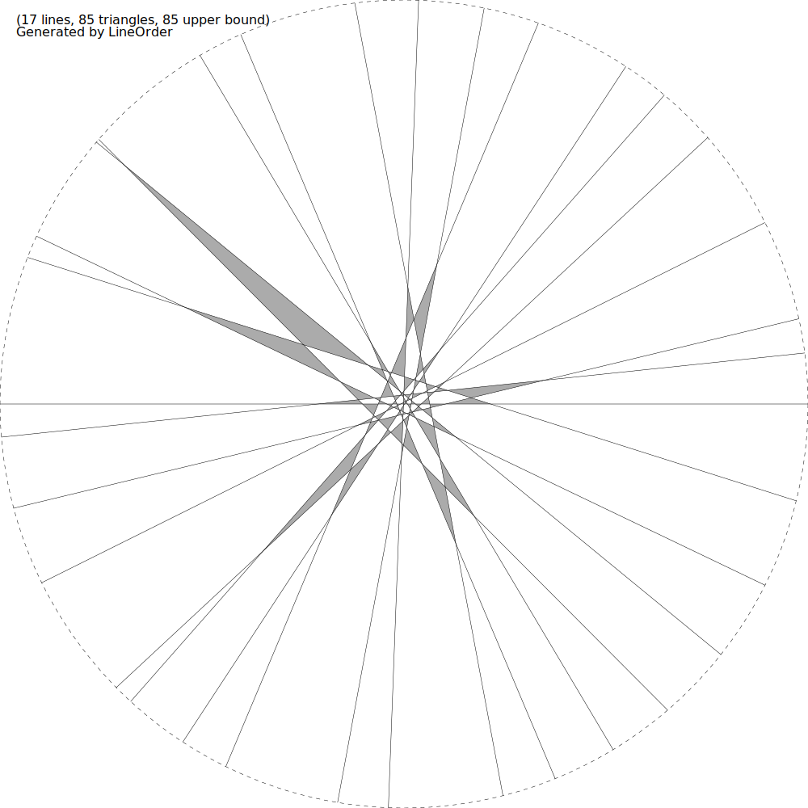

y = mi(x - ai), i = 0..16:
ε = 1 / 34 < 1 / 32
m0 = 0, a0 = 0
m1 = -0.31662, a1 = tan(7𝜋/16)
m2 = -0.4788163, a2 = tan(-4𝜋/16)
m3 = -0.8192463, a3 = tan(3𝜋/16)
m4 = -1.0064197, a4 = tan(-6𝜋/16)
m5 = -1.6773552, a5 = tan(1𝜋/16)
m6 = -2.3680147, a6 = tan(-2𝜋/16)
m7 = -5.3495275, a7 = tan(5𝜋/16)
m8 = 26.9677311, a8 = -ε
m9 = 5.4154817, a9 = tan(2𝜋/16)
m10 = 2.3804705, a10 = tan(-5𝜋/16)
m11 = 1.5253093, a11 = ε
m12 = 1.1349036, a12 = tan(-3𝜋/16)
m13 = 0.9288056, a13 = tan(4𝜋/16)
m14 = 0.4979408, a14 = tan(-1𝜋/16)
m15 = 0.2413881, a15 = tan(6𝜋/16)
m16 = 0.0926636, a16 = tan(-7𝜋/16)
For wxMaxima:
0,
-0.31662 * (x - tan(7 * %pi / 16)),
-0.4788163 * (x - tan(-4 * %pi / 16)),
-0.8192463 * (x - tan(3 * %pi / 16)),
-1.0064197 * (x - tan(-6 * %pi / 16)),
-1.6773552 * (x - tan(1 * %pi / 16)),
-2.3680147 * (x - tan(-2 * %pi / 16)),
-5.3495275 * (x - tan(5 * %pi / 16)),
26.9677311 * (x - 1/34),
5.4154817 * (x - tan(2 * %pi / 16)),
2.3804705 * (x - tan(-5 * %pi / 16)),
1.5253093 * (x + 1/34),
1.1349036 * (x - tan(-3 * %pi / 16)),
0.9288056 * (x - tan(4 * %pi / 16)),
0.4979408 * (x - tan(-1 * %pi / 16)),
0.2413881 * (x - tan(6 * %pi / 16)),
0.0926636 * (x - tan(-7 * %pi / 16)),
|
 |